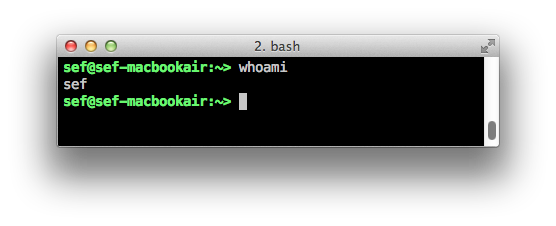

Why Quit? Because They Have Bigger Monitors
Good engineers are attracted to places with a strong engineering culture. But how can you see what the culture is really like from the outside? Here are my two quick-and-dirty indicators.

First a word about what I mean by an engineering culture. It means engineers are valued and important. Some implications:
- How are decisions made? In an engineering culture, technical people have input into what gets built, when, and by whom. Not signoff, but a real say.
- Is there respect for the craft of making software? Coding is still creative work that requires the right time and space. Some projets are tough to predict how long they will take, and that's needs to be OK.
- Infrastructure. How hard is it for the people who know (engineers, managers) to justify to their bosses when work is needed on non-feature driven stuff? This could be in the runtime system (like scaling work on the message queue) or back office (like build systems or version control).
Unfortunately, teasing this out in an interview can be tricky unless you have someone you really know and trust on the inside.
How big are the monitors?
A story from a prior company. I was an engineering manager that had a retention problem. One of the engineers on my team quit to go to a smaller, hipper company. This was from my exit interview:
And now I understand that this is totally true. Places that value their people consider equipment expenses small compared to the productivity (and happiness) of their people. The best engineers are given the best tools to do their jobs. Big monitors are a very visible sign of this.Me: why are you leaving?
Him: because they have bigger monitors.
Me: (incredulous) are you kidding? we can get you a bigger monitor.
Him: it's not just me -- everyone has big monitors.
Me: why is that so important?
Him: because it shows how much they value my time. The extra money to cram that many more pixels into my retina must be worth it to them.
Can people choose their own email addresses?
Non-engineers sometimes don't appreciate how important an email address is. It's your identity on line. A strict naming convention (first name last initial, or worse, last name first initial) indicates place that values conformity over engineer happiness. Worse, its a great way to make their people feel like cogs or "human resources," not the cool individuals that they are.(Aside: let's do away with the term Human Resources. It's horrible.)
This one is important for me personally since I have a weird first name. If you don't let me be sef@company.com then you get major demerits in my book. And no, clunky alias tricks, like a mailing list with one member in it, doesn't count. It's what you see on your shell prompt that matters; it's what whoami returns that matters.

One final word: this isn't a slam on you hardworking IT guys and gals who keep important things running and have to enforce the rules you're given. Instead, I'm speaking to the bad policies (usually stemming from bad cultures) that can put you into bad positions. If you are at such a place, hunker down and pray for daylight.
Comments
Comments powered by Disqus